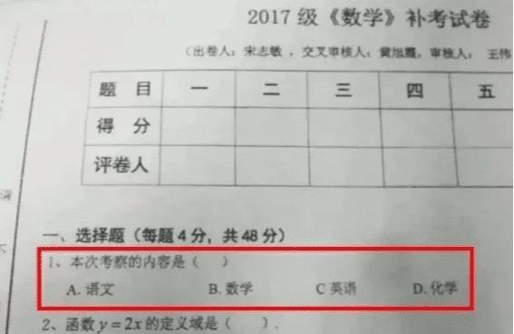
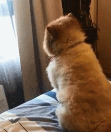
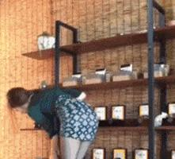
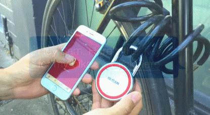
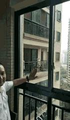

爲了懇求女朋友原諒，男生竟當衆下跪，這種做法真的好嗎？
2020-08-29 愛笑的冬陽吖「爲了懇求女朋友原諒，男生竟當衆下跪」，這樣做真的好嗎？
情侶在一起相處久了，總會有些磕磕碰碰的，吵架也是難以避免的，也難免會做出一些極端的事情。這不一位小哥爲了懇求女朋友的原諒，竟在大街上下跪道歉，而作爲這位小哥的女朋友，絲毫沒有在意男生的行爲，而是視而不見拿着個手機玩着。
小編覺得吧，這個男生的道歉方式未免有些不妥，道歉的方式這麼多，大可不必用這種極端的方式道歉。作爲這位小哥的女朋友，不但沒有制止男朋友下跪道歉行爲，反而視而不見，有點讓人費解。
換作是你們，要是惹對象生氣了，你會怎麼做呢？
上大學的時候，每次期末最大的心愿就是能科科60以上。所以很多老師們都會在考試前給同學們劃重點，爲了能讓同學們及格也是費勁了心思，你看看出這張試卷的老師是有多麼的用心良苦啊！要是這個題還能答錯，那真的是思想出問題了。

今天房東帶我去看房子，本來其他地方還挺滿意的，但是唯獨這個廁所讓我匪夷所思，我琢磨的大半天也沒搞明白這個馬桶的用法，網友們，這個馬桶怎麼用？
網吧看到的，你說我要不要坐大爺旁邊和他一起開黑
揭祕那些廚師不爲人知的訓練技巧，想要成爲優秀的廚師，就得從基本功做起
姑娘，這幽怨的眼神哈哈哈
買家秀，哈哈哈這也太真實了吧

高手在民間呀，大哥這車技可真牛
自從裝上這車載風扇，麻麻再也不用擔心我出門中暑啦！
我家汪星人這幾天總會朝着窗戶默默的發呆，是不是有什麼心事？

公司來了一位大長腿祕書，很勤快很能幹

現在還有這麼智能的鎖了嗎？從此竊賊又多了一個黑客的身份

每天一個撩妹技巧
姑娘，你這洗一次頭得花多少的洗髮水呀
家裏裝上這個窗以後，再也不用擔心被盜了。

何方妖孽！在此作妖，快快現出原形
女朋友膽子太小不敢走玻璃棧道，只能用暴力拖過去了

相關焦點
-
男生求女朋友原諒的情話,向女朋友認錯的一段暖心話
男生求女朋友原諒的情話， 一定要學會以後給對方去說。每一個人考慮事情的時候都不可能那麼周全。做錯事也是很正常的事情，不過你在做完測試以後也要看你的態度了，尤其是情侶之間，當你犯了錯誤的時候，要是還沒有一顆坦誠悔過的心，你會發現女孩子就會對你越來越失望。願意說出一些情話，願意用一些行動來證明自己愛情的同時，就說明你對於這段感情還是想用心去經營。 -
心理學:背叛你的人「跪下」懇求原諒,心軟對你沒好處
爲了能讓石像成爲真正的人，皮格馬利翁用一顆真摯的心懇求愛神阿佛洛狄忒，愛神被皮格馬利翁的真誠打動，施法達成了他的心愿。這則寓言故事是我在研究期待效應的時候看到的，核心含義是「只要你心存期望，幸福就不會拋棄你，只要你不放棄心中的希望，早晚有一天，你會達成所願」。爲什麼遭遇背叛的男性、女性朋友，不顧家人、朋友的反對，依然會選擇原諒背叛自己的伴侶呢？ -
當年高考忘記塗答題卡的女孩,下跪懇求給機會被拒絕,後來怎樣了
01當年高考忘記塗答題卡的女孩，下跪懇求給機會被拒絕，後來怎樣了不知道大家還記不記得當年那個高考忘記塗答題卡，下跪懇求監考老師的女孩？2008年的高考，依然和現在一樣充滿了緊張的氣氛，考生們在試卷上提筆如飛，爲了自己的未來奮戰。在緊張的氛圍下，難免會出一些意外情況。有一個女孩小菊（化名），就因爲過於緊張而忘記塗答題卡。 -
男生對女友下跪磕頭?真心愛你的人,捨不得你活成奴顏婢膝的模樣
今天，在網絡上又看到了一則高校食堂內大學男生向女友跪地磕頭的場景。說實話，我寧願這是一場擺拍的惡搞小視頻，但後來一想，也不對呀，就算是爲了擺拍，這種玷污了愛情美好的樣子也太難看了。 女孩高高在上，男孩低頭跪乞，這也能配得起「愛情」？ -
河南鄭州一高校食堂,男生對女生下跪磕頭,女生蹺二郎腿頭也不回
，兩個人疑似是男女朋友關係，女生坐在食堂的凳子上，一隻胳膊搭在凳子的靠背上，還翹着二郎腿，對於男生的舉動，這名女生根本就沒有回頭看，這樣的場面讓不少路過的學生都感到心酸。 都說男兒膝下有黃金，作爲男人必須要對自己的一言一行負責，有的人說跪天跪地跪父母，如果給別人跪，那就喪失了尊嚴，尊嚴能讓我們活得更有骨氣，我們不知道這名男生究竟和這名女生之間發生了什麼事，但我們知道作爲一個男人，在大庭廣衆下給女生下跪 -
和女朋友吵架了要怎麼哄呢?做以下三件事情讓女朋友原諒你!
因此，男生和女朋友吵架的時候，雖然可能雙方都有自己的理由，還認爲自己是對的。但一般情況下、和女女朋友吵完架以後，看到女朋友心情不好，男生這時就要主動哄女朋友了。要不然女朋友內心會很難受，可能就不哄好了，也哄不回來了。 -
165的男生真的找不到女朋友嗎?
大家好，我是純品生活，分享更多情感問題請關注我，謝謝支持！問題：165的男生真的找不到女朋友嗎？說到女朋友大學時候談了一個，後來因爲異地分了。現在交往的是第二個，今年要領證了。165的男生說找女朋友難不難，這個要看自己的能力了，追女生無非三種，膽大心細臉皮厚，如果有錢那就更好了，肯定事半功倍有錢解千愁嘛！男生165真的找不到女朋友嗎？ -
一個腦洞題:韓國瑜6月5日開記者會當衆下跪,罷韓會過嗎?
島內網友腦洞大開，拋出「救韓者聯盟」一個個可能人選，從王金平到吳敦義，從韓冰到韓國瑜自己，甚至連「當衆下跪」這一「終極大招」都想出來了。王金平下周站出來懇請高雄市民？有「高雄王」之稱的前「立法院長」王金平，5月中旬就有消息傳出，將在適當時機出手助韓國瑜一臂之力。 -
又現下跪式「道德綁架」？軟飯男爲推脫家庭責任不擇手段
確實，我們或多或少遇到過這種靠撒潑乞求，來逃避責任的做法，可恨又可氣。 現在很多人，事情明明是他做錯了，道歉賠償就好了，他偏不，他下跪，逼迫對方礙於臉面放過他。這種油鹽不進的「垃圾人」，太能令人抓狂了。 -
Skippy當衆下跪:她說好
記者劉宜庭／綜合報道「Crispy脆樂團」由Skippy和丁丁（丁不拉丁）組成，兩人交往10年，如今戀情終於開花結果，在昨（13日）晚的演唱會上，他突然當衆向女友下跪求婚，事後也開心在臉書上報喜，「謝謝大家，她說好。」 -
請管好你男朋友遊戲裏的「女朋友」
其中有一個女生膽子比較大，剛認識的時候就笑嘻嘻地調笑問：芒果哥哥，你有女朋友了嗎？芒果不是第一次回答這個問題：我有女朋友了。她當着遊戲裏所有人的面說：沒關係，那我等你分手，實在不行我當小三也行呀。糖糖就在一旁，聽到了全過程。不過她並沒有放在心上，女生開玩笑的語氣誰都聽得出來，所以她也只是假裝生氣提醒着芒果：這個小姑娘有點過了啊，你自己注意。 -
知名主播因撩妹向老婆下跪求原諒?!
LPL真的永遠拿不下S級冠軍了嗎？每年S系列大賽前，我們總能看到世界各聯賽進入S世界大賽的戰隊的消息。 比如北美戰隊到韓國集訓啊，歐洲戰隊到韓國集訓啊，台灣戰隊到韓國集訓啊，甚至LOL的世界霸主LCK戰隊，也是在S世界賽前訓練，跟其他地區打訓練賽之類的消息！ -
當年那個高考忘塗答題卡,下跪懇求給機會的女孩,後來怎麼樣了
不知從何時起，高考成爲衡量孩子優秀與否的一項標準，追求好成績、考上好學校，變成大家共同的目標。一個人對某件事情，投入的精力越多，期望就會越高，壓力也會越大，緊張感就會越明顯。有這樣一位考生，她在高考時因過度緊張，臨交卷時才發現忘記塗答題卡，下跪懇求給機會，後來怎麼樣了呢？ -
山東小伙當衆向心愛男生求婚,極其浪漫,羣衆:少了倆搶老婆的
大家都知道結婚都是一男一女的，同性之間戀愛的話不犯法，但是要結婚的話也不合法，在中國法律中並沒有寫道有禁止同性戀，因此同性之間戀愛也不違法，同時也不受婚姻法保護，近日12月14日山東菏澤一小伙當衆就向心愛的男生求婚。 -
何潔直播發飆,司雯嘉下跪求原諒,栽那麼多跟頭暴脾氣一點不改!
如果說下跪這種戲碼大概都能想到宮斗劇，也就順便想到宮斗劇巔峯《甄嬛傳》。最近《甄嬛傳》中的大boss之一蔡少芬參加了一檔節目--《奮鬥吧主播》，在這檔節目裏，真就上演了下跪求原諒的戲碼，不過讓人下跪的不是蔡少芬而是沒演過娘娘的何潔。 -
女朋友生氣,直男試試這三個方法,讓她對你笑顏逐開
現實生活中，其實情商高比較會哄人的男孩子還真的不算多。比如說兩個人吵架的時候，男生一般都會比較直，並且啊搞不清楚狀況，直接就是不知道對方到底爲什麼生氣。有時候即使是明白了自己的女朋友生氣的原因，他也不知道該如何去哄，所以啊這個時候女生也是挺無奈的。 -
女朋友生氣都是男生的錯嗎?
這樣的男朋友不分手難道留着過年嗎？但是C就真的很認真的在打麻將，女朋友要吃牌，他剛好就碰牌或者槓掉，然後打的牌女朋友一張都要不上，還截女朋友的胡……我感覺他女朋友的臉色就是在強忍着不掀桌，後來他女朋友點炮了，C胡牌還嘚瑟地嘲笑人家，這下女朋友終於爆發了，甩下一句「你自己玩吧。」就去看電視去了。 -
▷男生會介意女朋友的家境嗎?
點擊關注莫大人，置頂或星標公衆號每晚跟你說☽晚安 -
「小品皇后」趙麗蓉逝世二十周年,當年的她竟讓侯耀文當衆下跪!
在綵排現場，當時已經揚名立萬的侯耀文把趙麗蓉氣得轉身就走，最後爲求得原諒，侯耀文只得下跪認錯。這到底是怎麼一回事呢？衆位稍安勿躁，且聽慢慢道來。趙麗蓉對待藝術嚴謹負責的態度是行內外有目共睹的，比如在《打工奇遇》裏，爲了練好「貨真價實」這四個字，她把家裏的報紙全都用來練字。爲了學好佈局，足足寫了幾刀紙的毛筆字。 -
【圖】原來男生最喜歡的,竟不是這種顏色的絲襪???
男生都覺得膚色褲襪是老奶奶們穿的嗎？